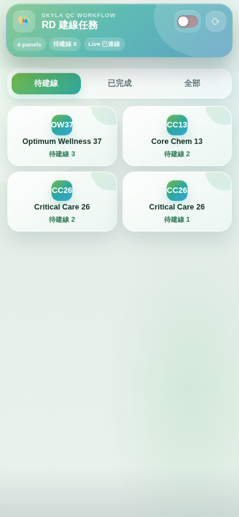
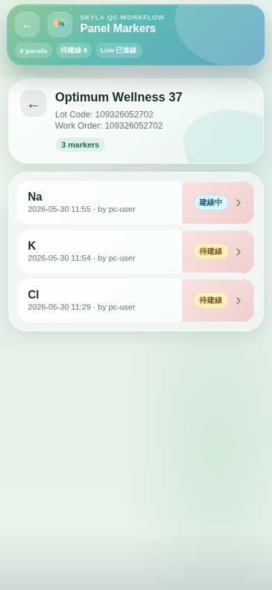
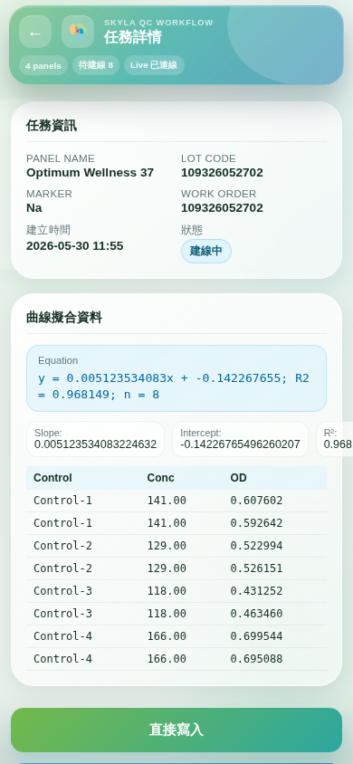
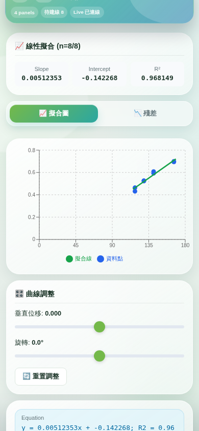
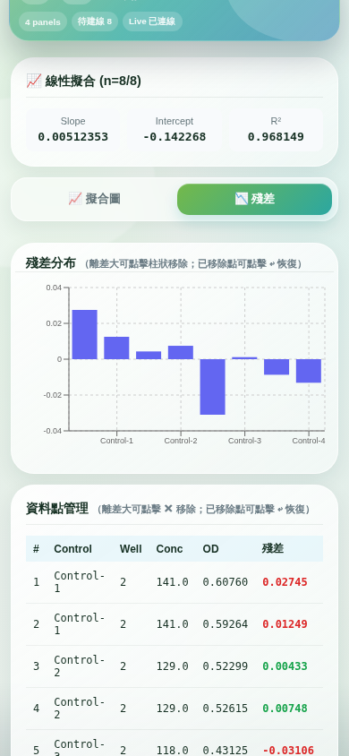
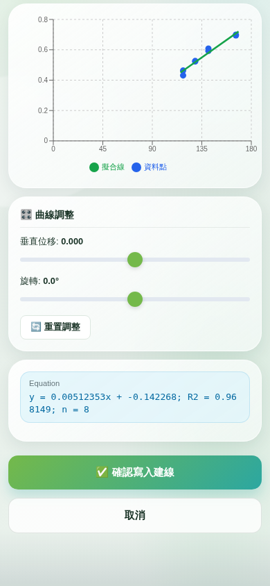
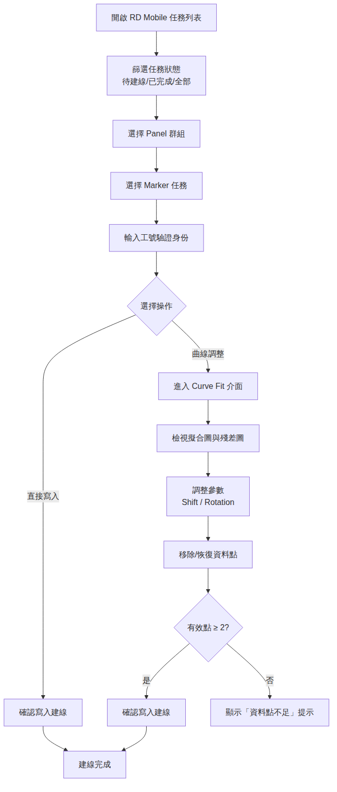

Skyla RD 建線
Skyla RD 建線功能提供 RD 研發人員在手機端執行建線任務與曲線擬合操作。PC 端透過「建線送 RD」將任務推送至 RD 待建線清單後，RD 人員可在手機上檢視任務列表、選擇 Panel 群組與 Marker 任務，並透過直接寫入或曲線擬合調整（Curve Fit）完成建線作業。曲線擬合支援垂直位移與旋轉參數調整、資料點移除與恢復，以及殘差分布圖檢視。
存取網址：
https://52-192-28-39.sslip.io/qc-web/pre-assignment/rd-mobile
任務列表
-
篩選任務狀態任務列表頂部提供三個篩選按鈕：「待建線」顯示尚未完成的任務、「已完成」顯示已建線完成的任務、「全部」顯示所有任務。預設顯示「待建線」狀態的任務。

-
Panel 任務群組檢視任務列表以 Panel 群組方式呈現，每個群組顯示 Panel 名稱、待建線數量與總任務數。點擊 Panel 群組卡片可展開檢視該群組下的所有 Marker 任務。

-
Marker 任務詳情在 Panel 群組中點擊特定 Marker 任務，進入任務詳情頁面。詳情頁顯示 Marker 名稱、建立時間、建立者、任務狀態等資訊，並提供「直接寫入」與「曲線調整」兩種操作選項。

建線操作步驟
-
開啟任務列表使用手機瀏覽器開啟 RD Mobile 頁面，系統自動載入待建線任務列表。頁面頂部顯示 Panel 數量與待建線任務統計。
-
選擇 Panel 群組從任務列表中點擊目標 Panel 群組卡片，進入該 Panel 的 Marker 任務清單。清單顯示 Lot Code、Work Order 及各 Marker 的狀態。
-
選擇 Marker 任務在 Panel 詳情中點擊目標 Marker 任務，進入任務詳情頁面。頁面顯示該 Marker 的建線資料與操作按鈕。
-
輸入工號驗證身份點擊操作按鈕後，系統彈出工號驗證對話框。輸入 RD 人員工號後點擊「驗證」，系統確認身份後方可執行建線操作。
-
選擇操作方式驗證通過後，可選擇兩種操作方式：「直接寫入」將原始資料直接寫入建線；「曲線調整」進入 Curve Fit 介面，可調整擬合參數後再寫入。
直接寫入建線
-
確認直接寫入選擇「直接寫入」後，系統將原始建線資料直接寫入。寫入成功後頁面顯示「已完成建線」訊息與確認者工號，任務狀態自動更新為「已完成」。
曲線擬合 Curve Fit
-
擬合圖檢視進入曲線調整介面後，頁面顯示 Scatter Chart 散佈圖，藍色圓點為資料點，綠色線段為線性擬合線。圖表上方顯示 Slope、Intercept、R² 等擬合指標。

-
殘差分布圖檢視切換至「殘差」分頁，檢視各資料點的殘差分布柱狀圖。殘差值較大的資料點以紅色標示，可作為移除離差點的參考依據。

-
資料點移除與恢復操作在殘差圖中點擊柱狀可移除該資料點，或在資料點管理表格中點擊「✕」按鈕移除。已移除的資料點以紅色叉號顯示於散佈圖中，可點擊「↩」按鈕恢復。移除或恢復後，擬合線與指標即時重新計算。
-
確認寫入建線調整完成後，點擊「確認寫入建線」按鈕，系統將調整後的擬合參數（Slope、Intercept、R²、Equation）寫入建線。寫入成功後顯示「曲線調整完成」訊息。
曲線擬合參數調整
-
垂直位移 Shift使用「垂直位移」滑桿調整擬合線的垂直偏移量。調整範圍為 -0.5 至 0.5，步進值為 0.001。向上拖動增加位移，向下拖動減少位移，擬合圖即時更新。

-
旋轉 Rotation使用「旋轉」滑桿調整擬合線的旋轉角度。調整範圍為 -15° 至 15°，步進值為 0.1°。旋轉以資料中心點為軸心，擬合圖與指標即時更新。
-
重置調整操作點擊「🔄 重置調整」按鈕，將垂直位移與旋轉參數恢復為初始值（Shift = 0, Rotation = 0°），擬合線回到原始狀態。
操作流程圖

注意事項
資料點不足
若曲線擬合的有效資料點少於 2 筆，系統將顯示「資料點不足」提示且無法進行擬合操作。請確認任務資料是否完整，或聯繫 PC 端操作人員重新送出建線資料。